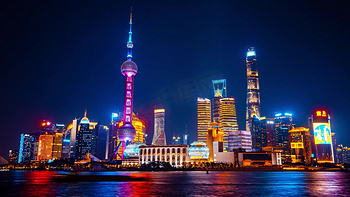
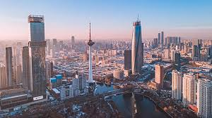
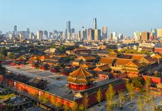
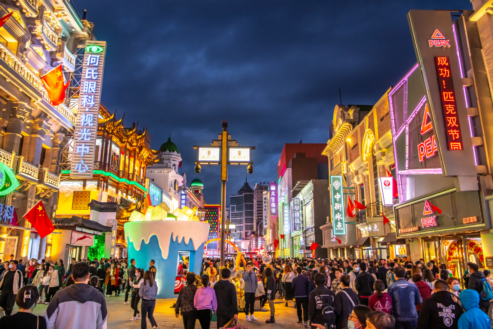
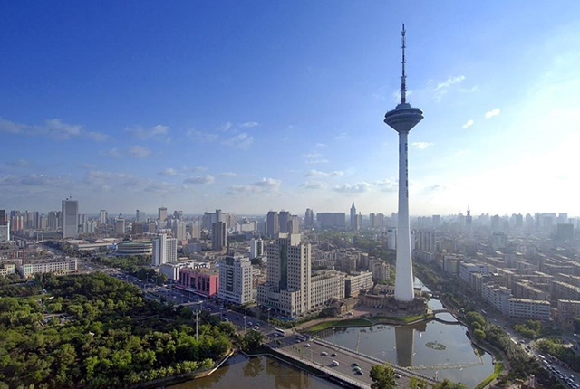
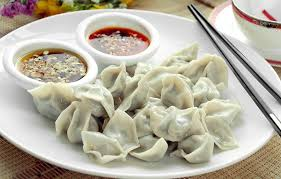
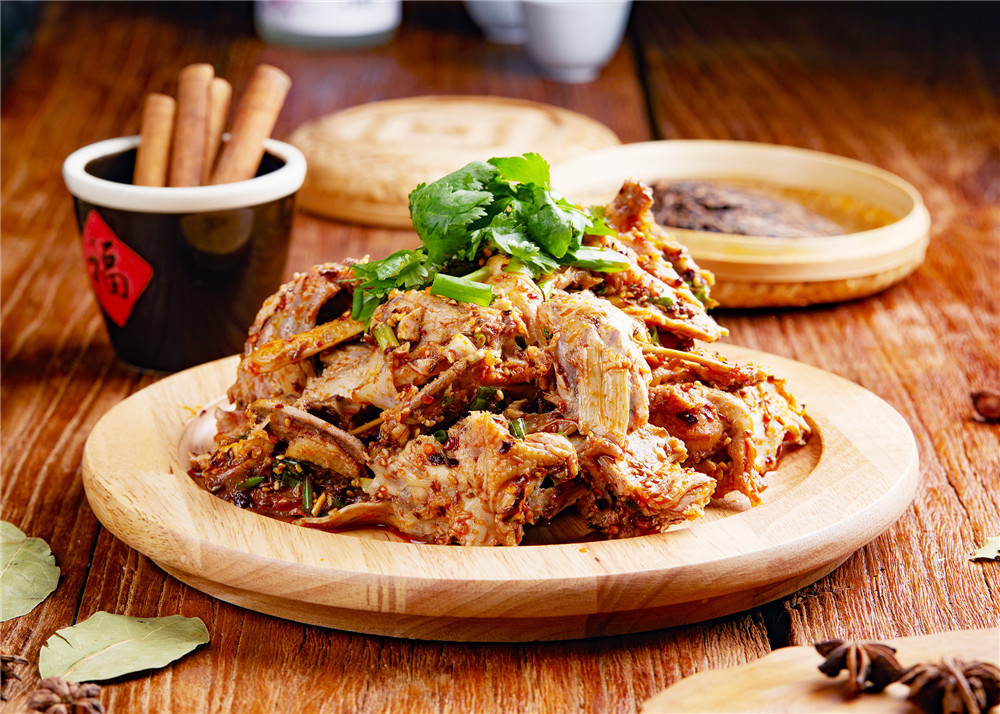
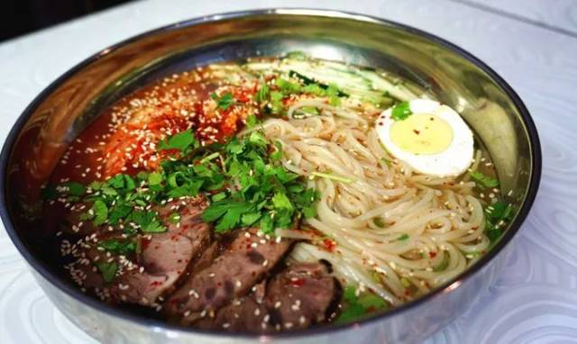
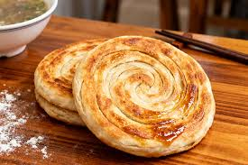
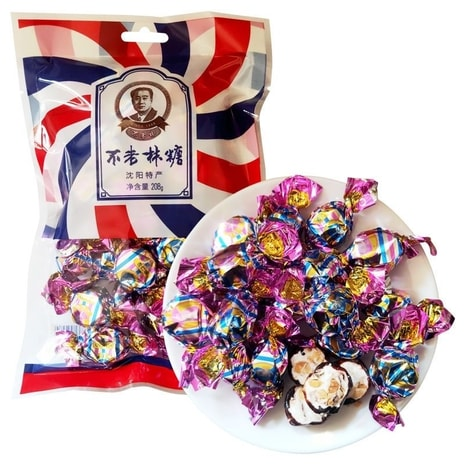

A city integrating historical heritage and modern vitality
Explore Shenyang
Shenyang, historically known as Shengjing and Fengtian, is the capital of Liaoning Province and the political, economic, and cultural center of Northeast China. As a national historical and cultural city, Shenyang has a history of nearly 3,000 years and is known as "the birthplace of one dynasty and the capital of two emperors".
Here, there are not only world cultural heritage sites such as the Shenyang Palace Museum, Zhaoling Mausoleum, and Fuling Mausoleum, but also industrial landmarks such as the China Industrial Museum and Tiexi Cultural and Creative Park. It is a city that combines historical heritage with modern industrial vitality.
km² | City Area
Million | Permanent Population
Years | Urban History

One of China's only two surviving imperial palace complexes
Founded in 1625, it was the palace built and used by Nurhaci, the Taizu of the Qing Dynasty, and Huang Taiji, the Taizong of the Qing Dynasty. It covers an area of more than 60,000 square meters, with 114 ancient buildings and over 500 rooms.

China's first commercial pedestrian street
With a history of over 370 years and a total length of 1,500 meters, it is Shenyang's earliest commercial center, gathering many time-honored brands and modern commercial brands.

Iconic landmark of Shenyang
With a total height of 305.5 meters, it is the tallest steel structure tower in Northeast China, integrating radio and television transmission, sightseeing, catering and entertainment.

Founded in 1829, famous for thin skin, large filling, fresh and delicious taste

A century-old time-honored brand, smoked pork is fat but not greasy, and pancakes are crispy outside and soft inside

Korean specialty, sweet and sour, refreshing, a must-have in summer

Classic Shenyang breakfast, crispy outside and tender inside, fresh and delicious

Specialty candy of Shenyang, sweet but not greasy, rich taste
Shenyang is an important old industrial base in China, known as the "eldest son of the Republic" and the "Eastern Ruhr". After the founding of New China, Shenyang contributed many "firsts" to the country: the first lathe, the first jet aircraft, the first large transformer...
Today's Shenyang, while preserving its industrial memory, continues to promote industrial upgrading, transforming from a traditional industrial city to a modern and intelligent industrial new city, and continuing to write industrial legends.
Old Industrial Base
Aerospace
Automobile Manufacturing
Intelligent Manufacturing